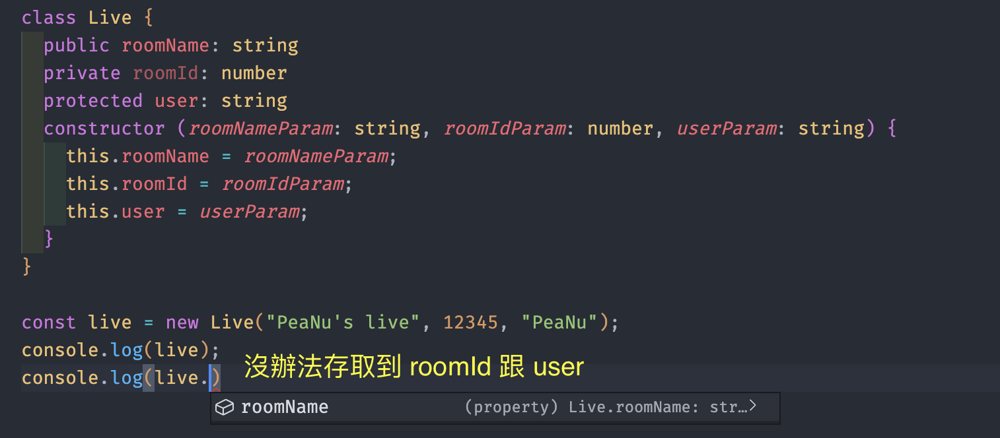
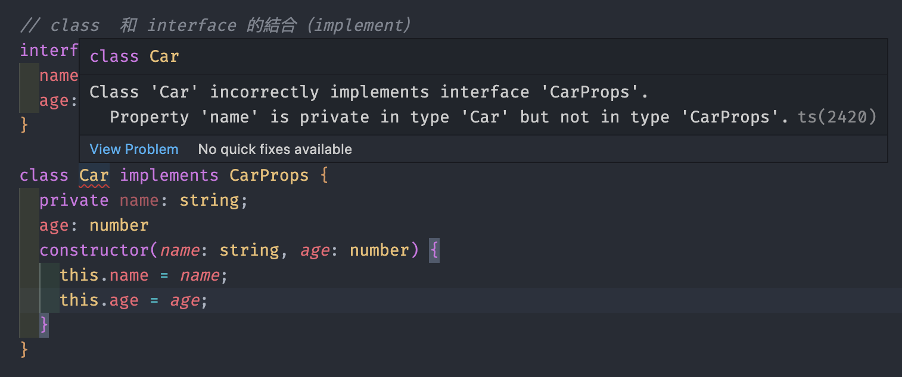

真的頗基礎的 QQ
前備知識
TS 只是一個工具，用來讓 JS 可以有強型別的驗證
我們只是先用 TS 的方式來寫，接著再編譯器 來 Complie 成 JS
相關指令
tsc index.js 編譯某個檔案tsc 根據 config 來做編譯tsc --watch 有變動就重新編譯
最基本範例 1 2 3 let aaa: string = '123' console .log(aaa)
編譯後：
1 2 var aaa = '123' console .log(aaa)
另外我也有看過這種寫法：
1 let aaa = 123 as number;
這樣的意思應該跟上面是差不多的，就看你喜歡哪種吧！
設定 config 先在專案底下執行：
專案就會多出一個 tsconfig.json，裡面就可以去調整設定（跟 VS Code 差不多）
這邊來設定最基本的兩個東西：
入口資料夾
出口資料夾
1 2 3 4 5 { "rootDir" : "./src" , "outDir" : "./dist" }
接著只要執行 tsc 就會自動根據 config 來做編譯了。
另外要開啟 source map 的話可以把 sourceMap 設為 true。
型別介紹 基本 1 2 3 4 5 6 7 8 9 10 11 12 13 let str: string = '123' let str1: string str1 = 'PeaNu' let num: number = 123 let bool: boolean = true let n: null = null let un: undefined = undefined let anyType: any = 123
陣列 1 2 3 4 5 6 7 8 9 10 let arr1: string [] = ['a' , '123' ]let arr2: string [][] = [['a' ], ['b' ]]let tuple1: [number , string , boolean ] = [123 , 'abc' , true ]let tuple2: [string , string ][] = [['abc' , 'def' ]]
Enum 有點像代號的感覺，但改用文字來表示：
1 2 3 4 5 6 7 enum LiveStatue { SUCCESS = 0 , FAIL = -1 , STREAMING = 1 } const liveStatus = LiveStatue.SUCCESS
Union 一個變數可以設定多個 type：
1 2 3 4 let union: number | string union = 123 union = 'abc'
type 把 union 改用 type 來儲存（跟變數有點像）
1 2 3 4 5 6 7 8 9 10 11 12 13 14 15 16 17 18 19 20 type A = number | string type B = boolean | string let useTypeA: AuseTypeA = 123 useTypeA = 'abc' let useTypeB: BuseTypeB = true useTypeB = 'yoyoyo' type Card = { name : string des : string } const user: Card = { name : 'PeaNu' , des : '...' }
interface 應該是用在 Object：
1 2 3 4 5 6 7 8 9 10 11 interface Card2 { name : string des : string age : number } const user: Card2 = { name : 'PeaNu' , des : '...' , age : 20 }
也可以用 ? 來變成「可選」的：
1 2 3 4 5 6 7 8 9 10 11 interface Card2 { name : string; des: string; age?: number; } const user: Card2 = { name : 'PeaNu' , des : '...' }
type 跟 interface 的區別 一個可以「擴充」，一個不行。
1 2 3 4 5 6 7 8 9 10 11 12 13 14 15 16 17 type Card1 = { name : string des : string } type Card1 = { age : number } interface Card2 { name : string des : string } interface Card2 { age?: number }
Function function 主要是用來處理參數和回傳值的部分：
1 2 3 4 5 6 7 8 9 10 function stringConcat (a: string , b: string ): string return a + b } function saySomething (age: string , name?: string ) return age + name }
斷言（unknown） 第一個會用到的情境是 call API 的時候。
因為 TypeScript 沒辦法知道 response 長怎樣，所以什麼都沒加的話就會是 any。
1 2 3 4 5 6 7 8 9 10 11 12 13 type Data = { userId : number id : number title : string completed : boolean } async function getData ( const res = await fetch('https://jsonplaceholder.typicode.com/todos/1' ) const data = (await res.json()) as Data console .log(data) }
所以上面的例子就透過 as Data 來做斷言，告訴它回傳值會長得像 Data 這個模樣。
第二種用法是可能某個值被 TypeScript 自動判斷，但這結果可能不太準確，就能用 as unknown as xxx 的手法來做：
1 2 3 4 5 6 7 8 9 10 11 12 13 14 15 16 17 18 19 20 21 22 23 24 25 26 type Data = { userId : number id : number title : string completed : boolean } const data1: Data = { userId : 1 , id : 1 , title : 'delectus aut autem' , completed : false } const data2 = data1type Data2 = { name : string } const data2 = data1 as unknown as Data2
Class 的應用 一般在 class 裡可以宣告 private、publice、protected 等等之類的關鍵字，but 我們都知道 JS 本身並沒有實際支援這些功能，你還是可以在外面直接去存取 private 的成員。
而 TS 解決了這個問題，如果你在 TS 去存取私有成員，就會編譯失敗。
提醒：private 跟 protected 的差別在於，透過繼承的 class 沒辦法存取到 private，但 protected 可以。
1 2 3 4 5 6 7 8 9 10 11 12 13 class Live public name: string private id: number protected user: string constructor (nameParam: string , idParam: number , userParam: string ) this .name = nameParam this .id = idParam this .user = userParam } } const live = new Live("PeaNu's live" , 12345 , 'PeaNu' )console .log(live)
這樣的結果會是：
1 2 3 4 5 6 { "name" : "PeaNu's live" , "id" : 12345 , "user" : "PeaNu" }
但如果你在 TS 這樣寫的話就會錯誤：

至於 protected 的部分也一樣，TS 一樣會去判斷繼承的 class 可以存取到哪些成員：
1 2 3 4 5 6 7 8 9 10 class SpecailLive extends Live constructor (nameParam: string , idParam: number , userParam: string ) super (nameParam, idParam, userParam) } start ( super .name super .user super .id } }
如果不依賴 TS 的話，JS 原生的作法是這樣：
1 2 3 4 5 6 7 8 9 10 11 12 class Live2 #name constructor (name: string ) this .#name = name } } const testLive = new Live2('Test Live' )console .log(testLive)
implement class 如果想把某個 interface 實作出來，可以用 implement 這個關鍵字，像這樣：
1 2 3 4 5 6 7 8 9 10 11 12 13 interface CarProps { name : string age : number } class Car implements CarProps name : string age : number constructor (name: string , age: number ) this .name = name this .age = age } }
不過要注意，interface 中的成員一定是 public，不可以在 class 中寫成 private：

泛型 簡單來說就是「call function 的時候才決定 type 是什麼」，直接看範例：
1 2 3 4 5 6 7 function print <T >(data: T ) console .log(data) } print<number >(999 ) print<string >('Hello' ) print<boolean >(123 )
另外也能用在 class 上（constructor）：
1 2 3 4 5 6 7 8 9 class Print <T > data : T constructor (d: T ) this .data = d } } const p = new Print<number >(123 )const p1 = new Print<string >('Hello' )
& 與 | 其實他們就跟 && 和 || 的意思是ㄧ樣的（應該是為了方便區分吧！），直接來看 code 就明白了：
1 2 3 4 5 6 7 8 9 10 11 12 13 14 15 16 17 18 19 interface OP1 { a : number } interface OP2 { b : number } const op1AndOp2: OP1 & OP2 = { a : 123 , b : 456 } const op1OrOp2: OP1 | OP2 = { a : 123 }
TS 內部提供的 utility Record 第一個是 Record ，其中一個例子是決定 Object 的 key 跟 value：
1 2 3 4 5 6 7 8 9 10 11 12 13 14 15 16 17 interface CatInfo { age : number breed : string } type CatName = 'miffy' | 'boris' | 'mordred' const cats: Record<CatName, CatInfo> = { miffy : { age : 10 , breed : 'Persian' }, boris : { age : 5 , breed : 'Maine Coon' }, mordred : { age : 16 , breed : 'British Shorthair' }, peanu : { age : 22 , breed : '...' } }
Pick 第二個是 Pick ，可以從 interface 抽一部分的內容來用：
1 2 3 4 5 6 7 8 9 10 11 12 13 14 interface Todo { title : string description : string completed : boolean } type TodoPreview = Pick<Todo, 'title' | 'completed' >const todo: TodoPreview = { title : 'Clean room' , completed : false , description : 'yoyoyo' }
Omit 第三個是 Omit ，就是 Pick 顛倒過來而已，Pick 是把要的拿出來，Omit 是把不要的東西拿掉，其他留下。
1 2 3 4 5 6 7 8 9 10 11 12 13 14 15 16 interface Todo { title : string description : string completed : boolean createdAt : number } type TodoPreview = Omit<Todo, 'description' >const todo: TodoPreview = { title : 'Clean room' , completed : false , createdAt : 20210511 , description : '...' }
Partial 有時候你可能定義了這樣的型別：
1 2 3 4 5 6 7 8 9 interface Blog { id : string title : string slug : string categories : string [] tags : string [] featureImageUrl?: string content : string }
但你沒辦法確保每一次使用時都能填入每一個值，這時候就可以用 Partial<T> 的方式把所有選項變成「Optional」，避免 TypeScript 的編譯錯誤：
1 2 3 const post: Partial<Blog> = { title : 'Partial so good' }
你並沒有直接改變 Blog 的型別，而是在「使用時」來讓他變成可選的，我覺得這是很划算的功能。
React 基本範例 這邊主要介紹幾個東西：
Functional Component 的 type
Props 的 type
hook 的 type
1 2 3 4 5 6 7 8 9 10 11 12 13 14 15 16 17 18 19 20 21 22 import React, { useState } from 'react' import './App.css' type TitleProps = { name : string | number desc?: string } const Title: React.FC<TitleProps> = ({ name, desc } ) => { return <h1 > Hello, {name}</h1 > } const App: React.FC = () => { const [title, setTitle] = useState<string | number >('PeaNu' ) return <Title name ={title} /> } export default App
Event 如果要指定 Event 的 type，可以加上 React 前綴來處理：
1 2 3 4 5 6 7 8 9 10 11 12 13 14 15 16 17 18 19 20 21 22 23 24 25 26 27 28 29 30 31 32 33 34 35 function App ( const canvas1 = useRef<HTMLCanvasElement>(null ) function onStart (event: React.TouchEvent | React.MouseEvent ) const cavasSize = canvas1.current?.getBoundingClientRect()! let position = { x : 0 , y : 0 } if (event.type === 'mousemove' ) { position.x = (event as React.MouseEvent).clientX - cavasSize.left position.y = (event as React.MouseEvent).clientY - cavasSize.right } else { position.x = (event as React.TouchEvent).changedTouches[0 ].clientX - cavasSize.left position.y = (event as React.TouchEvent).changedTouches[0 ].clientY - cavasSize.right } return position } return ( <div className ='App' > <canvas ref ={canvas1} id ='canvas' width ='500' height ='300' onMouseDown ={onStart} onTouchStart ={onStart} > </canvas > </div > ) }